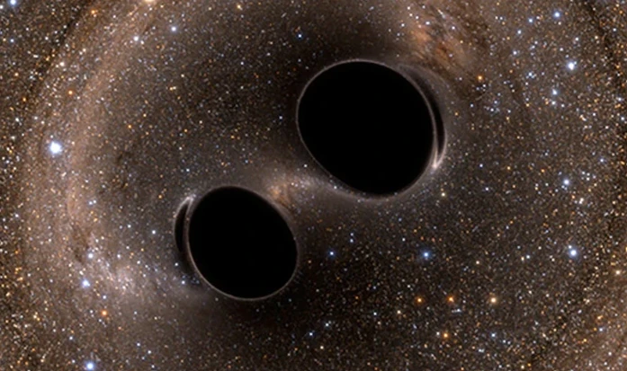

Acesse meu GitHub
🌌 There is a supermassive black hole at the heart of every galaxy
Active galaxies often pump out 100 times more light than a normal galaxy. With the discovery in 1963 of quasars, it was clear that the light comes not from stars but from a central region smaller than the Solar System.
The only conceivable energy source is matter heated to incandescence as its swirls down onto a giant black hole up to 50 billion times the mass of the Sun.
In the 1990s, NASA’s Hubble Space Telescope found that, although active galaxies account for only about 1% of galaxies, supermassive black holes are no anomaly.
Almost every galaxy, including our Milky Way, contains one, but starved of a food supply, most have switched off.
What are supermassive black holes doing in the hearts of galaxies? Were they the seeds around which galaxies congealed? Or did new-born galaxies spawn them? These remain some of the biggest unsolved questions in astrophysics.
🌌 The Universe has the same temperature everywhere
The heat of the Big Bang fireball was bottled up in the Universe. It had nowhere to go, so it is still around us today.
The weird thing is that its temperature – 2.725°C above absolute zero (–270°C), the lowest temperature possible – is essentially the same everywhere.
Yet, if we imagine cosmic expansion running backwards, like a movie in reverse, we find that parts of the Universe that are on opposite sides of the sky today were not in contact when the fireball of radiation broke free of matter.
In other words, there has been insufficient time for heat to travel between them and the temperature to equalise since the Universe’s birth.
Astronomers fix this by maintaining that early on, the Universe was much smaller than expected, so heat got around easily.
To get from this smaller size to its present size, the Universe had to go through an initial burst of superfast expansion, known as inflation.
The heat of the Big Bang fireball was bottled up in the Universe. It had nowhere to go, so it is still around us today.
The weird thing is that its temperature – 2.725°C above absolute zero (–270°C), the lowest temperature possible – is essentially the same everywhere.
Yet, if we imagine cosmic expansion running backwards, like a movie in reverse, we find that parts of the Universe that are on opposite sides of the sky today were not in contact when the fireball of radiation broke free of matter.
In other words, there has been insufficient time for heat to travel between them and the temperature to equalise since the Universe’s birth.
Astronomers fix this by maintaining that early on, the Universe was much smaller than expected, so heat got around easily.
To get from this smaller size to its present size, the Universe had to go through an initial burst of superfast expansion, known as inflation.
🌌 95% of the Universe is invisible
There is a discovery so amazing that it has yet to trickle into the consciousness of most working scientists: everything science has been studying these past 350 years is but a minor contaminant of the Universe.
Only about 4.9% of the mass-energy of the Universe is atoms: the kind of stuff you, me, the stars and galaxies are made of (and, of that, only half has been spotted with telescopes).
About 26.8% of cosmic mass-energy is invisible dark matter, revealed because it tugs with its gravity on the visible stuff.
Candidates for what makes up dark matter include hitherto unknown subatomic particles and black holes made in the Big Bang.
But, in addition to dark matter there is dark energy, accounting for 68.3% of the mass-energy of the Universe.
It’s invisible, fills all of space and is accelerating cosmic expansion. And our best theory – quantum theory – overestimates its energy density by a factor of one followed by 120 zeroes!
🌌 The Universe was born
The Universe has not existed forever. It was born. 13.82 billion years ago all matter, energy, space – and even time – erupted into being in a titanic fireball called the Big Bang.
The fireball began expanding and, out of the cooling debris, there eventually congealed the galaxies – great islands of stars of which our Milky Way is one among an estimated two trillion. This, in a nutshell, is the Big Bang theory.
Whatever way you look at it, the idea that the Universe popped into existence out of a nothing – that there was a day without a yesterday – is utterly bonkers. But that is what the evidence tells us.
An immediate question arises: what happened before the Big Bang?
The reluctance to face this awkward question is why most scientists had to be dragged kicking and screaming to accept the idea of the Big Bang.
🌌 Most of the stuff in the Universe has repulsive gravity
The Universe is expanding, its constituent galaxies flying apart like pieces of cosmic shrapnel in the aftermath of the Big Bang. The only force operating should be gravity, which acts like a web of elastic between the galaxies, slowing them down.
But in 1998, contrary to all expectations, astronomers found that the expansion of the Universe is actually speeding up.
To explain it, they postulated the existence of invisible stuff, which they’ve termed dark energy, that fills space and has repulsive gravity. It is the repulsive gravity of this dark energy that is accelerating cosmic expansion.
Dark energy accounts for almost two thirds of the mass-energy of the Universe. School science is therefore behind the times in saying that gravity sucks. In most of the Universe it blows!
🌌 The Sun is producing only a third of the neutrinos expected
Hold up your thumb. 100 billion neutrinos are passing through your thumbnail every second. 8.5 minutes ago they were in the heart of the Sun.
Solar neutrinos are a by-product of sunlight-generating nuclear reactions. When Ray Davis set out to detect them with 100,000 gallons of cleaning fluid down a mine in South Dakota, he expected to confirm the standard picture of the Sun.
Instead, he found only a third of the expected neutrinos, something that was not only confirmed by later experiments but led to his Nobel Prize.
Neutrinos are ghostly subatomic particles existing in a weird quantum superposition – akin to an animal that is simultaneously a cow, a pig and a chicken.
As they travel from the Sun, they flip between being an electron neutrino, a muon neutrino and a tau neutrino, which is why experiments sensitive to only one type pick up a third of the expected number.
🌌 Most planetary systems are different from ours
But the discovery of planets around other stars – at last count, more than 3,500 have been confirmed – has created a headache. None is like our own.
There are super-compact planetary systems in which all planets orbit closer to their parent star than Mercury, the innermost planet of the Solar System, does to the Sun.
There are Jupiter-mass planets that must have migrated inward.
There are planets in highly elliptical orbits, similar to those of comets.
And there are planets that orbit the wrong way around their stars.
Given that planets are believed to congeal from gas and dust swirling in the same direction around a new-born sun, this latter discovery is especially hard to explain.
As yet, nobody knows whether the unusualness of our Solar System has anything to do with the human race having arisen to notice it.
🌌 The first gravitational waves detected came from a binary black hole system nobody predicted
On 14 September 2015, gravitational waves were detected on Earth for the first time. These ripples in the fabric of spacetime – predicted by Einstein in 1916 – came from the merger of two black holes in a distant galaxy.
Briefly, the power pumped out was 50 times greater than that of all the stars in the Universe combined. But this was not the only jaw-dropping aspect of the event.
Each of the black holes was in the 30 solar mass range. Since a black hole is what’s left after most of a star has blown into space as a supernova, the precursor stars must have weighed at least 300 solar masses.
Such stars are incredibly rare today. But the two black holes could have been remnants of the very first generation of stars – thought to be huge – or even primordial black holes, born in the inferno of the Big Bang itself.
🌌 We appear to be alone
There are approximately 100,000,000,000,000,000,000,000 stars in the Universe. And probably more planets than stars. Yet in all this immensity there is only one place we know of where life exists: Earth.
Despite searches for intelligent signals, no sign of intelligent extraterrestrial life has been found. In fact, there is a good argument that if such life-forms exist out there, not only should we see signs of them but they should already have come here.
“Where are they?” the physicist Enrico Fermi famously asked. Some astronomers think the answer is we are alone, that someone has to be the first.
But absence of evidence is not evidence of absence. It took three billion years for us to go from single cells to complex life, which suggests taking this step is hard.
Technological civilisations like ours may be rare and their lifetimes short; we may have missed any others by millions or billions of years. The other alternative is that the nearest one may simply be too far away for us to detect.